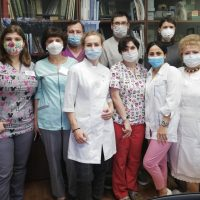
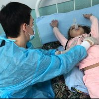
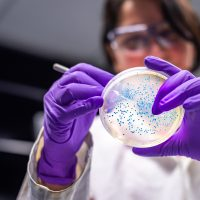
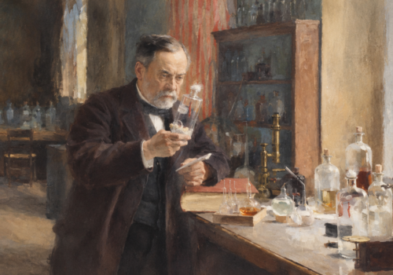
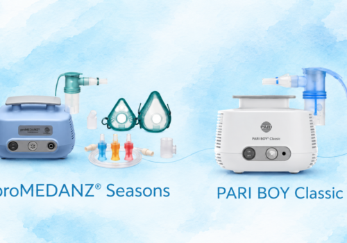

Стандарты оказания медицинской помощи людям с муковисцидозом от Европейского общества по муковисцидозу
Перевод стандартов на русский язык выполнен при поддержке благотворительного фонда «Острова»
ПодробнееФонд помогает людям с муковисцидозом жить дольше и лучше и является центром экспертизы по МВ в России
Ответы на вопросы о муковисцидозе для семей и специалистов, помощь юриста и психолога, обучение и данные — в одном месте
Выберите свою ситуацию — мы покажем материалы и помощь именно для вас
Материалы собраны вокруг жизненных ситуаций
Основы для тех, кто впервые встретил муковисцидоз, и практика ведения для тех, кто ведёт пациентов
Каждый раздел отвечает на конкретный вопрос. Внутри — материалы для семей и для специалистов
Перевод стандартов на русский язык выполнен при поддержке благотворительного фонда «Острова»
ПодробнееЧто это значит для пациентов, которым важна надёжная ингаляционная система
Основные показатели, выводы и методология выпуска
Пошаговый маршрут: к каким специалистам обратиться, какие обследования предстоят и какую помощь можно получить. Первые шаги →
Механизмы обеспечения для детей и взрослых различаются. Разбираем порядок и документы. Лекарственное обеспечение →
Порядок действий, шаблоны обращений и бесплатная консультация юриста Фонда. Отказ в препарате →
Носительство, шансы для будущих детей и преконцепционный скрининг. Генетика МВ →
Красные флаги у детей и взрослых и алгоритм диагностики. Для специалистов →
Контакты центров, специалистов и пациентских организаций по регионам. Помощь в регионе →





Среди людей с муковисцидозом есть студенты, которые успешно учатся, осваивают выбранные специальности и развиваются в профессиональной и творческой сфере. Фонд поддерживает их стипендиями.
Ваше пожертвование превращается в конкретный результат: обученного врача в регионе, оснащённый кабинет кинезитерапии, консультацию юриста для семьи.
Выберите, о чём вам писать. Мы не присылаем лишнего.